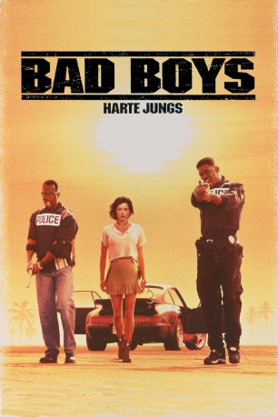

#2018 Bad Boys - Harte Jungs
Alternativ: Bad Boys
 
 IMDB-Wertung: 6.8 / 10
IMDB-Wertung: 6.8 / 10  Metascore: 41
Metascore: 41 
Ein paar Gangster stehlen aus der Asservatenkammer der Polizei konfisziertes, reines Heroin im Wert von 100 Millionen Dollar! Die beiden Drogenfahnder Marcus Burnett und Mike Lowrey haben den Auftrag die Beute wiederbeschaffen. Und das innerhalb von 72 Stunden, ansonsten wird ihre Abteilung geschlossen. Die einzige Zeugin des Überfalls hat Angst, taucht zunächst unter, vertraut sich dann aber doch Mike Lowrey an. Bald stoßen sie auf gigantische Korruption und einen kaltblütigen Hintermann...
Jahr: 1995
Dauer: 118 Minuten
FSK: 18
Land: USA Studio: Columbia PicturesTonspuren: DTS - ,
Untertitel: Deutsch,
Auflösung: 1080p (1920x1040) Größe: 7567 MB
Genre: Action, Thriller, Drama, Komödie, Krimi
Regisseur:  Michael Bay
Michael Bay
Drehbuch: George Gallo, Michael Barrie, Jim Mulholland, Doug Richardson
Soundtrack: Mark Mancina
Darsteller:
Datei: X:\FSK18-Collections\Bad Boys\Bad Boys - Harte Jungs (1995, FSK18, 1920x1040).mkv seit 25.09.2015
Festplatte: FSK18
 Alle Filme aus Gruppe 'FSK18-Collections\Bad Boys'
Alle Filme aus Gruppe 'FSK18-Collections\Bad Boys'